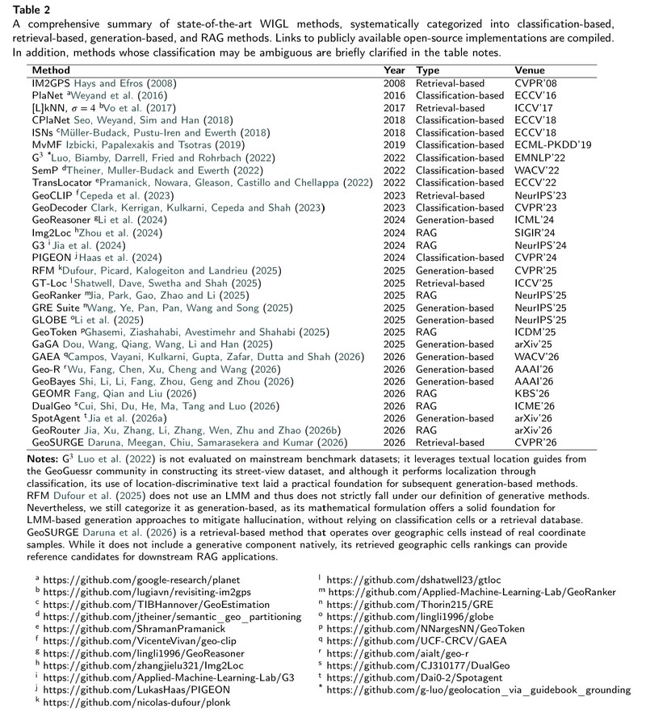
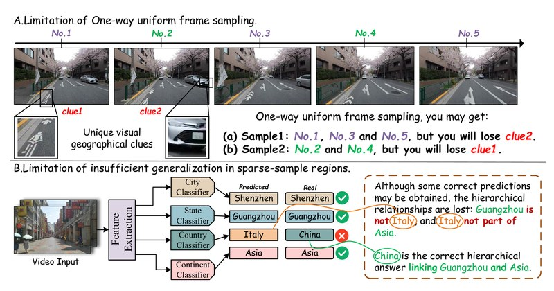
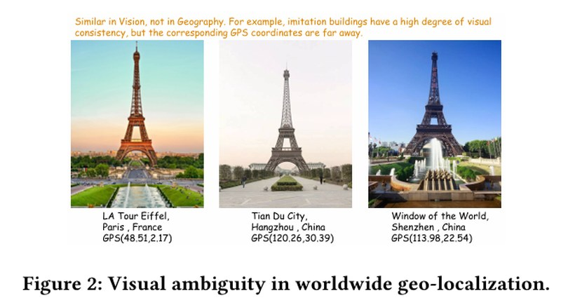
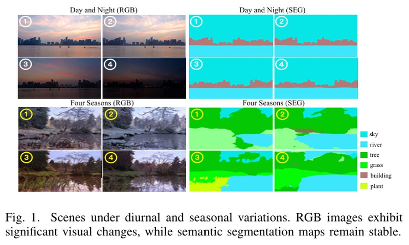

Tracing Locations from Pixels: A Survey of Worldwide Image Geo-localization
IPM 2026 · Information Processing and Management · Accepted

Researcher in Computer Vision — Worldwide Image & Video Geo-localization
I am a researcher in computer vision working on worldwide image and video geo-localization — inferring where on Earth visual content was captured, from street level up to the continent. My work covers dual-view contrastive representation learning, metric geographic structure modeling, and hierarchical graph reasoning over geographic scales, often augmented by large multimodal models (LMMs).
My work has been published at ICME 2026 and Information Processing and Management (IPM). I authored the first survey on worldwide image geo-localization. Feel free to reach out for collaboration or discussion.
Tracing Locations from Pixels: A Survey of Worldwide Image Geo-localization
IPM 2026 · Information Processing and Management · Accepted

GeoGAT: Bidirectional Temporal Sampling Meets Hierarchical Graph Attention for Global Video Geo-localization
Preprint · arXiv:2609.39128 · September 2026

GeoMetric: Injecting Metric Geographic Structure into Worldwide Image Geo-Localization
Preprint · arXiv:2606.08918 · June 2026

DualGeo: A Dual-View Framework for Worldwide Image Geo-localization
ICME 2026 · IEEE International Conference on Multimedia and Expo · arXiv:2604.25533
